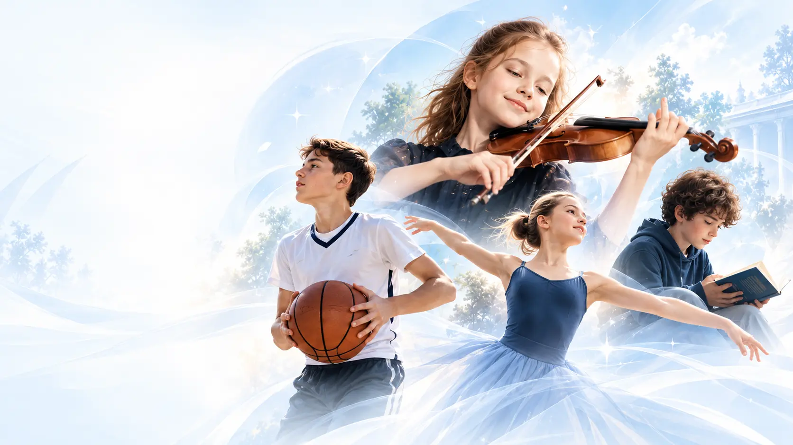

01✳
Yetenek ve Yatkınlık
Öğrencinin sanat veya spor alanındaki doğal eğilimleri ve temel yetenekleri değerlendirilir.

DEĞERLENDİRME KRİTERLERİMİZ
Nova’da değerlendirme, tek bir alana odaklanmaz. Öğrencinin tüm gelişim alanlarını kapsayan bilimsel ve bütüncül bir yaklaşım üzerine kuruludur.

BÜTÜNCÜL BİR DEĞERLENDİRME YAKLAŞIMI
Amacımız, öğrencilerimizin güçlü yönlerini keşfetmek ve bu güçlü yönleri doğru bir şekilde destekleyerek kalıcı bir gelişim sağlamaktır.
Öğrencinin sanat veya spor alanındaki doğal eğilimleri ve temel yetenekleri değerlendirilir.
Koordinasyon, denge, çeviklik, ritim, hareket kabiliyeti ve branşa özgü fiziksel özellikler incelenir.

Öğrencinin seçildiği alandaki mevcut teknik yeterliliği ve öğrenme kapasitesi değerlendirilir.

Yeni becerileri öğrenme hızı, verilen yönlendirmelere uyumu ve gelişime açıklığı gözlemlenir.

Sahne duruşu, ifade gücü, performans becerisi, oyun anlayışı ve branşa özgü uygulama yeteneği değerlendirilir.

Odaklanma, sorumluluk, düzenli çalışma alışkanlığı ve eğitim sürecine uyumu dikkate alınır.

Öğrencinin grup içerisinde iletişim kurabilmesi, iş birliği yapabilmesi ve takım kültürüne uyumu gözlemlenir.

SÜREKLİ GELİŞİM TAKİBİ
Ölçme ve değerlendirme yalnızca Nova’ya kabul aşamasında uygulanmaz.
Öğrencilerin gelişimleri belirli dönemlerde yapılan sınavlarla yeniden değerlendirilir; elde edilen sonuçlar doğrultusunda bireysel gelişim planları güncellenir.
Nova’da amaç çocukları birbirleriyle karşılaştırmak değil, her öğrencinin kendi potansiyelindeki gelişimi bilimsel ve objektif ölçütlerle takip etmektir.